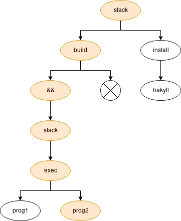

Make the Fish fly
I have always been inspired by the people who use (or at least can use) terminal for any kind of activity that is associated with programming. Sure, every task has its own set of instruments to be solved with. But there are instruments that you can count on in almost any situation. That’s why I spend so much time in the terminal.
For a long time (like a year and a half) I was using zsh beefed with oh-my-zsh. While it was providing me a lot of crucial functionality, I wasn’t very happy about oh-my-zsh, so when someone mentioned fish in comments to Use Haskell for shell scripting thread on Reddit, I decided to give it a try after few minutes of reading how awesome fish is.
In this article I am going to share my thoughts after using fish. But keep in mind that this is not a tutorial to fish (mostly because it already has a good written one, which covers most important aspects of day-to-day fish, but you might also want to read full documentation to get the full grasp).
Exploring new stuff is fun. So even if you are totally happy with your setup, I highly advice you to take a look at fish.
Fish: catch it before you cook
For installation guide, check official site or readme file on GitHub.
After installation you might want to make fish your default shell, so you need to use chsh:
$ chsh -s $(which fish)On OS X (and some other systems) you might face an error saying chsh:his ex /path/to/fish: non-standard shell. In this case, you need to modify /etc/shells file by adding the path to your fish.
$ sudo sh -c 'echo $(which fish) >> /etc/shells'In case of any other problems - may the force be with you. Otherwise - you are ready to dive in.
Fish: first impression
The first thing to notice in fish - blazingly fast completion and suggestions based on history, man pages and custom rules. This is something that amazed me so much when I saw it in action, because I remember how tricky it is to configure such things in bash and zsh, but here you have everything and even more out of box.
What I like about suggestions - they can be narrowed to commands and arguments. For example, when the prompt is empty, typing ↑ navigates you through all your history. If you type something like stack, all history will be narrowed to stack command only. And if you type stack build you’ll get even more narrowing. It’s like a tree, where every word you type selects a branch of completion. Sure enough, it’s a little bit smarter than this.

The second thing about fish completions - they are based on man pages. In bash you have bash-completion, in oh-my-zsh you have plug-ins (and when you have a lot of them, your life becomes kind of laggy). But fish takes a lot of completions from man pages. And it works so fast, that it’s just amazing. Now I don’t need to remove everything I typed just to check man when I forget which key I need, -N or -n. All completions are paginated, and you can scroll them to find what you need. Super productive.
So you better keep pressing <tab> in different situations to see what else it can complete for you.
λ git checkout <tab>
features/fish (Branch) master (Branch) origin/master (Branch)But yeah, sometimes command you are executing doesn’t have its own man page. For such cases, you also have an option to write your own completions. For more information, check out this guide.
Fish: configurations
Fish comes with really great configurations out of the box. For most users, it might be enough to configure only their prompt and PATH variable. You should understand that Fish as a product believes that “configurability is the root of all evil”. So “every configuration option in a program is a place where the program is too stupid to figure out for itself what the user really wants, and should be considered a failure of both the program and the programmer who implemented it”.
Some might find this argument a little bit too much. In my opinion, Fish developers made a great work at providing great ‘defaults’ (ah, the irony). But in any case, there are things that are by design configurable. Like visuals and environment variables.
Since Fish is a ‘friendly fish’, they allow to configure a lot of things from the browser, just run fish_config function in terminal and have fun.
On startup, fish evaluates files /path/to/fish/config.fish, /etc/fish/config.fish and $HOME/.config/fish/config.fish in specified order. If you want to change fish configurations, you should modify only /etc/fish/config.fish file for system wide configurations and $HOME/.config/fish/config.fish file for user only configurations.
Actually, fish supports $XDG_CONFIG_HOME variable for specifying the path to user-only configurations directory. You need to set this variable to the path of the directory that contains fish directory. I do use it because I like to have all dot files in one repository. You can change its value by using the set function:
$ set -U XDG_CONFIG_HOME ~/.environmentWe use -U flag here because we need to give XDG_CONFIG_HOME universal scope (it will be shared between all the current users fish instances on the current computer, and will be preserved across restarts of the shell).
If you want to configure your prompt, you need to define the fish_prompt function in file $XDG_CONFIG_HOME/fish/fish_prompt.fish. A simple example from the documentation:
function fish_prompt -d "Write out the prompt"
printf '%s@%s%s%s%s> ' (whoami) (hostname|cut -d . -f 1) (set_color $fish_color_cwd) (prompt_pwd) (set_color normal)
end
Before rushing into creating your own prompt, I recommend to check some prompts that are available from box. Just fish_config and go to Prompt tab. Or use mine, which has a cool feature - it notifies you when some long-running command finishes. I describe it briefly in a separate article.
Fish: one language to script them all
Update Lately Fish started to move towards more POSIX-compatible syntax, so this argument is not as valid as was before.
As you might already know, fish has its own scripting language that does not care about POSIX compatibility. And in my opinion, this is the most controversial point in discussions like ‘zsh vs fish’. While it’s less verbose and more obvious, I see fish language as unnecessary drag. Seriously, when I need to write any script that can’t be described in one or two lines - I prefer to use Haskell. And also there are tons of great sh one-liners that I can’t call from the fish shell. And git cat-file -p branch^{tree} becomes git cat-file -p branch^\{tree\}.
Conclusion
Fish does not try to be everything but it does try to have a great out of the box experience. You definitely should give it a shot to make your own conclusion. Because everyone is a unique case.
Advantages
- Syntax highlighting.
- Good performance. I haven’t measured it, but unlike
zshwith huge amount of configurations, it doesn’t lag. - Suggestions and completion based on history, custom rules and man pages.
- Paginated completion, which is useful if you have dozens or hundreds items to complete from.
- Inline auto-suggestions.
- History de-duplication. So if you called something more than one time, it will appear in suggestions only once.
Disadvantages
- Not POSIX compatible. While I do like some differences from
sh, I prefer to useshlanguage for little scripts. When I need to write something non-trivial I better useHaskell. Seriously, in my opinion -fishlanguage is an overhead. But actually, this is a really minor drawback, which strikes only when you want to use greatshone-liners.
I don’t name fish dependency as a drawback, because I don’t work in an environment that I can’t change for my needs. And anyway Haskell with all packages I need is far more heavy dependency then fish. So don’t be angry.
Epilogue
I am really tired of oh-my-zsh. It’s a great project, but it’s too big for me as it has so many stuff I don’t need. As a project it suffers from being popular. The last time I checked it’s repository I found 417 unresolved pull requests. Some of them are few years old. Most of them are not paid any attention. I understand the reasons for this situation. But understanding doesn’t make me happy.
I know that one can use zsh without oh-my-zsh (or any other similar project). You can keep your configurations minimal or copy-paste huge amount of code just to keep all the fancy stuff at your bay.
While I like to play with configurations, in this particular case I really enjoy using fish. Most of the stuff just works, and I can focus on some specific functionality that I need.
So go ahead and try out what fish can give you. Don’t be afraid of making the switch. If you have any questions, you can email me and I will be happy to help you.
Have a nice shell-time!
P.S. As most of the stuff, my settings can be found on GitHub.